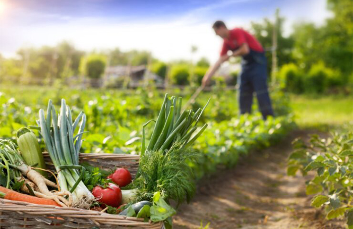
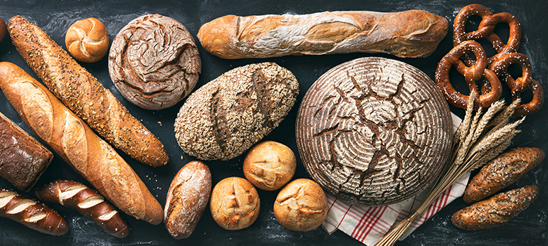
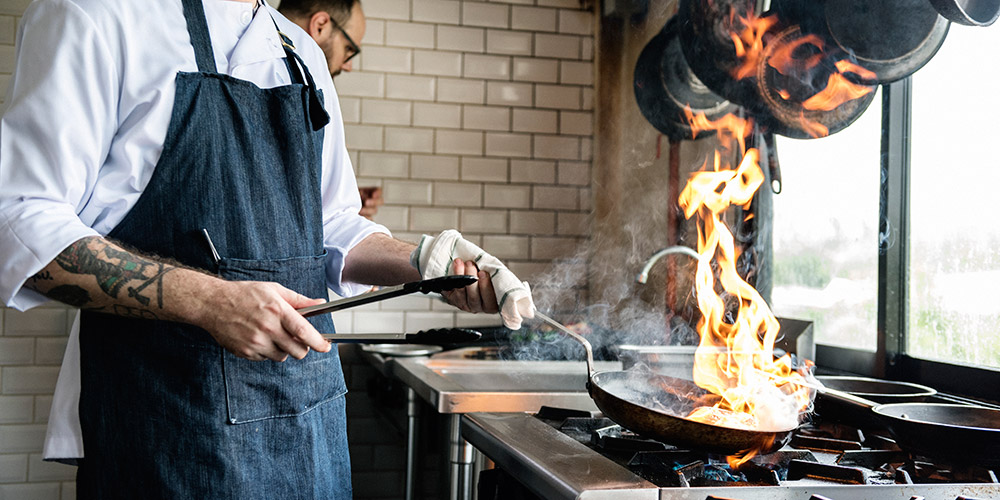
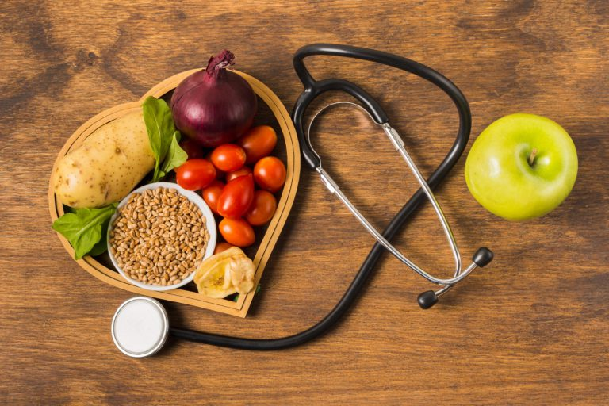

Estudia con nosotros
Agricultura
Primer curso
- Implantación de cultivos: Preparación del terreno, siembra y plantación.
- Taller y equipos de tracción: Manejo y mantenimiento de tractores y maquinaria.
- Infraestructuras e instalaciones agrícolas: Montaje y mantenimiento de riegos, invernaderos y naves.
- Principios de sanidad vegetal: Reconocimiento de plagas y enfermedades.
- Itinerario personal para la empleabilidad I.
- Inglés profesional.
- DUAL general: prácticas en empresas guipuzcoanas.
Segundo curso
- Producción de leche, huevos y animales para vida: Manejo ganadero.
- Control fitosanitario: Aplicación de tratamientos.
- Producción carne y otras producciones ganaderas.
- Empresa e iniciativa emprendedora.
- Formación en Centros de Trabajo (FCT): Prácticas en empresas.

Panadería, Repostería y Confitería
Primer curso
- Elaboraciones de panadería-bollería
- Procesos básicos de pastelería y repostería
- Elaboraciones de confitería y otras especialidades
- Operaciones y control de almacén en la industria alimentaria
- Seguridad e higiene en la manipulación de alimentos
- Empleabilidad
- DUAL general: prácticas en empresas guipuzcoanas.
Segundo curso
- Presentación y venta de productos de panadería y pastelería
- Postres en restauración
- Productos de obrador
- Empresa e iniciativa emprendedora
- Inglés técnico
- Formación en Centro de Trabajo

Cocina y gastronomía
Primer curso
- Preelaboración y conservación de alimentos
- Técnicas culinarias
- Procesos básicos de pastelería y repostería
- Seguridad e higiene en la manipulación de alimentos
- Empleabilidad
- DUAL general: prácticas en empresas guipuzcoanas.
Segundo curso
- Postres en restauración
- Productos culinarios
- Empresa e iniciativa emprendedora
- Inglés profesional
- Formación en Centro de Trabajo

Dietética
Primer curso
- Alimentación equilibrada
- Control alimentario
- Fisiopatología aplicada a la dietética
- Organización y gestión de una unidad / gabinete de dietética
- Relaciones en el entorno de trabajo
- Empleabilidad
- DUAL general: Formación en centros de trabajo
Segundo curso
- Calidad y mejora continua
- Dietoterapia
- Educación sanitaria y promoción de la salud
- Microbiología e higiene alimentaria
- Inglés profesional
- DUAL general: Formación en centros de trabajo

Dirección de cocina
Primer curso
- Estructura del mercado turístico
- Marketing turístico
- Gestión del departamento de pisos.
- Recepción y reservas.
- Inglés
- Itinerario personal para la empleabilidad I.
- Digitalización aplicada a los sectores productivos.
- Sostenibilidad aplicada al sistema productivo.
- Dual general (prácticas en empresa)
Segundo curso
- Protocolo y relaciones públicas.
- Dirección de alojamientos turísticos.
- Recursos humanos en alojamientos.
- Comercialización de eventos.
- Proyecto intermodular.
- Segunda lengua extranjera
- Itinerario personal para la empleabilidad II.
- Dual general (prácticas en empresa)